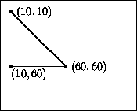

string<?
primitive.
In section 3 we said that programs were collections of function definitions and possibly some variable definitions, too. To guide the division of labor among functions, we also introduced a rough guideline:
Formulate auxiliary function definitions for every dependency between quantities in the problem statement.So far the guideline has been reasonably effective, but it is now time to take a second look at it and to formulate some additional guidance concerning auxiliary functions.
In the first subsection, we refine our original guideline concerning auxiliary programs. The suggestions mostly put into words the experiences that we made with the exercises. The second and third one illustrate two of the ideas in more depth; the last one is an extended exercise.
When we develop a program, we may hope to implement it with a single function definition but we should always be prepared to write auxiliary functions. In particular, if the problem statement mentions several dependencies, it is natural to express each of them as a function. Others who read the problem statement and the program can follow our reasoning more easily that way. The movie-theater example in section 3.1 is a good example for this style of development.
Otherwise, we should follow the design recipe and start with a thorough analysis of the input and output data. Using the data analysis we should design a template and attempt to refine the template into a complete function definition. Turning a template into a complete function definition means combining the values of the template's subexpressions into the final answer. As we do so, we might encounter several situations:
If the formulation of an answer requires a case analysis of the available values, use a cond-expression.
If a computation requires knowledge of a particular domain of application, for example, drawing on (computer) canvases, accounting, music, or science, use an auxiliary function.
If a computation must process a list, a natural number, or some other piece of data of arbitrary size, use an auxiliary function.
If the natural formulation of the function isn't quite what we want, it is most likely a generalization of our target. In this case, the main function is a short definition that defers the computation to the generalized auxiliary program.
The last two criteria are situations that we haven't discussed yet. The following two subsections illustrate them with examples.
After we determine the need for an auxiliary function, we should add a contract, a header, and a purpose statement to a WISH LIST of functions.36
| Guideline on Wish Lists |
Maintain a list of functions that must be developed to complete a program. Develop each function according to a design recipe. |
Before we put a function on the wish list, we must check whether something like the function already exists or is already on the wish list. Scheme provides many primitive operations and functions, and so do other languages. We should find out as much as possible about our working language, though only when we settle on one. For beginners, a superficial knowledge of a language is fine.
If we follow these guidelines, we interleave the development of one function with that of others. As we finish a function that does not depend on anything on our wish list, we can test it. Once we have tested such basic functions, we can work our way backwards and test other functions until we have finished the wish list. By testing each function rigorously before we test those that depend on it, we greatly reduce the effort of searching for logical mistakes.
People need to sort things all the time. Investment advisors sort portfolios by the profit each holding generates. Doctors sort lists of transplant patients. Mail programs sort messages. More generally, sorting lists of values by some criteria is a task that many programs need to perform.
Here we study how to sort a list of numbers not because it is important for many programming tasks, but also because it provides a good case study of the design of auxiliary programs. A sorting function consumes a list and produces one. Indeed, the two lists contain the same numbers, though the output list contains them in a different order. This is the essence of the contract and purpose statement:
;;sort : list-of-numbers -> list-of-numbers;; to create a sorted list of numbers from all the numbers inalon(define (sort alon) ...)
Here is one example per clause in the data definition:
(sort empty) ;; expected value: empty
(sort (cons 1297.04 (cons 20000.00 (cons -505.25 empty)))) ;; expected value: (cons 20000.00 (cons 1297.04 (cons -505.25 empty)))
The answer for the input empty is empty, because
empty contains the same items (none) and in sorted order.
Next we must translate the data definition into a function template. Again, we have dealt with lists of numbers before, so this step is easy:
(define (sort alon) (cond [(empty? alon) ...] [else ... (first alon) ... (sort (rest alon)) ...]))
Using this template, we can finally turn to the interesting part of the
program development. We consider each case of the cond-expression
separately, starting with the simple case. If sort's input is
empty, then the answer is empty, as specified by the
example. So let's assume that the input is not empty. That is,
let's deal with the second cond-clause. It contains two
expressions and, following the design recipe, we must understand what they
compute:
(first alon) extracts the first number from the input;
(sort (rest alon)) produces a sorted version of
(rest alon), according to the purpose statement of the function.
Putting together these two values means inserting the first number into its appropriate spot in the sorted rest of the list.
Let's look at the second example in this context. When sort
consumes (cons 1297.04 (cons 20000.00 (cons -505.25 empty))), then
(first alon) evaluates to 1297.04,
(rest alon) is (cons 20000.00 (cons -505.25 empty)), and
(sort (rest alon)) produces (cons 20000.00 (cons -505.25 empty)).
To produce the desired answer, we must insert 1297.04 between the
two numbers of the last list. More generally, the answer in the second
cond-line must be an expression that inserts (first
alon) in its proper place into the sorted list (sort (rest alon)).
Inserting a number into a sorted list isn't a simple task. We may have to
search through the entire list before we know what the proper place
is. Searching through a list, however, can be done only with a function,
because lists are of arbitrary size and processing such values requires
recursive functions. Thus we must develop an auxiliary function that
consumes the first number and a sorted list and creates a sorted list from
both. Let us call this function insert and let us formulate a
wish-list entry:
;;insert : number list-of-numbers -> list-of-numbers;; to create a list of numbers fromnand the numbers onalon;; that is sorted in descending order;alonis already sorted (define (insert n alon) ...)
Using insert, it is easy to complete the definition of
sort:
(define (sort alon) (cond [(empty? alon) empty] [else (insert (first alon) (sort (rest alon)))]))
The answer in the second line says that in order to produce the final
result, sort extracts the first item of the non-empty list,
computes the sorted version of the rest of the list, and inserts
the former into the latter at its appropriate place.
Of course, we are not really finished until we have developed
insert. We already have a contract, a header, and a purpose
statement. Next we need to make up function examples. Since the first input
of insert is atomic, let's make up examples based on the data
definition for lists. That is, we first consider what insert
should produce when given a number and empty. According to
insert's purpose statement, the output must be a list, it must
contain all numbers from the second input, and it must contain the first
argument. This suggests the following:
(insert 5 empty) ;; expected value: (cons 5 empty)
Instead of 5, we could have used any number.
The second example must use a non-empty list, but then, the idea for
insert was suggested by just such an example when we studied how
sort should deal with non-empty lists. Specifically, we said that
sort had to insert 1297.04 into (cons 20000.00
(cons -505.25 empty)) at its proper place:
(insert 1297.04 (cons 20000.00 (cons -505.25 empty))) ;; expected value: (cons 20000.00 (cons 1297.04 (cons -505.25 empty)))
In contrast to sort, the function insert consumes two inputs. But we know that the first one is a number and atomic. We
can therefore focus on the second argument, which is a list of numbers and
which suggests that we use the list-processing template one more time:
(define (insert n alon) (cond [(empty? alon) ...] [else ... (first alon) ... (insert n (rest alon)) ...]))
The only difference between this template and the one for sort is
that this one needs to take into account the additional argument n.
To fill the gaps in the template of insert, we again proceed on a
case-by-case basis. The first case concerns the empty list. According to
the purpose statement, insert must now construct a list with one
number: n. Hence the answer in the first case is (cons n empty).
The second case is more complicated than that. When alon is not
empty,
(first alon) is the first number on alon, and
(insert n (rest alon)) produces a sorted list consisting of
n and all numbers on (rest alon).
The problem is how to combine these pieces of data to get the answer. Let us consider an example:
(insert 7 (cons 6 (cons 5 (cons 4 empty))))
Here n is 7 and larger than any of the numbers in the
second input. Hence it suffices if we just cons 7 onto
(cons 6 (cons 5 (cons 4 empty))). In contrast, when the
application is something like
(insert 3 (cons 6 (cons 2 (cons 1 (cons -1 empty)))))
n must indeed be inserted into the rest of the list. More
concretely,
(first alon) is 6
(insert n (rest alon))
is
(cons 3 (cons 2 (cons 1 (cons -1 empty)))).
By adding 6 onto this last list with cons, we get the
desired answer.
Here is how we generalize from these examples. The problem requires a
further case distinction. If n is larger than (or
equal to) (first alon), all the items in alon are smaller than
n; after all, alon is already sorted. The result is
(cons n alon) for this case. If, however, n is
smaller than (first alon), then we have not yet found the proper place to
insert n into alon. We do know that the first item of
the result must be the (first alon) and that n must be
inserted into (rest alon). The final result in this case is
(cons (first alon) (insert n (rest alon)))
because this list contains n and all items of alon in
sorted order -- which is what we need.
The translation of this discussion into Scheme requires the formulation of a conditional expression that distinguishes between the two possible cases:
(cond [(>= n (first alon)) ...] [(< n (first alon)) ...])
From here, we just need to put the proper answer expressions into the two
cond-clauses. Figure 33 contains the complete
definitions of insert and sort.
Terminology: This particular program for sorting is known as INSERTION SORT in the programming literature.
Exercise 12.2.1. Develop a program that sorts lists of mail messages by date. Mail structures are defined as follows:
(define-struct mail (from date message))
A mail-message is a structure:
(make-mail name n s) name is a string, n is a number, and s is
a string.
Also develop a program that sorts lists of mail messages by
name. To compare two strings alphabetically, use the string<?
primitive.  Solution
Solution
Exercise 12.2.2.
Here is the function search:
;; search : number list-of-numbers -> boolean
(define (search n alon)
(cond
[(empty? alon) false]
[else (or (= (first alon) n) (search n (rest alon)))]))
It determines whether some number occurs in a list of numbers. The function may have to traverse the entire list to find out that the number of interest isn't contained in the list.
Develop the function search-sorted, which determines whether a
number occurs in a sorted list of numbers. The function must take advantage
of the fact that the list is sorted.
Terminology: The function search-sorted conducts a
LINEAR SEARCH.  Solution
Solution
Consider the problem of drawing a polygon,
that is, a geometric
shape with an arbitrary number of corners.37 A natural representation for a polygon is a list of
posn structures:
the empty list, empty, or
(cons p lop) where p is a posn
structure and lop is a list of posns.
Each posn represents one corner of the polygon. For
example,
(cons (make-posn 10 10) (cons (make-posn 60 60) (cons (make-posn 10 60) empty)))
represents a triangle. The question is what empty means as a
polygon. The answer is that empty does not represent a polygon and
therefore shouldn't be included in the class of polygon representations. A
polygon should always have at least one corner, and the lists that represent
polygons should always contain at least one posn. This suggest the
following data definition:
(cons p empty) where p is a posn, or
(cons p lop) where p is a posn
structure and lop is a polygon.
In short, a discussion of how the chosen set of data (lists of
posns) represents the intended information (geometric polygons)
reveals that our choice was inadequate. Revising the data definition
brings us closer to our intentions and makes it easier to design the
program.
Because our drawing primitives always produce true (if anything),
it is natural to suggest the following contract and purpose statement:
;;draw-polygon : polygon -> true;; to draw the polygon specified bya-poly(define (draw-polygon a-poly) ...)
In other words, the function draws the lines between the corners and, if
all primitive drawing steps work out, it produces true. For
example, the above list of posns should produce a triangle.
Although the data definition is not just a variant on our well-worn list theme, the template is close to that of a list-processing function:
;;draw-polygon : polygon -> true;; to draw the polygon specified bya-poly(define (draw-polygon a-poly) (cond [(empty? (rest a-poly)) ... (first a-poly) ...] [else ... (first a-poly) ... ... (second a-poly) ... ... (draw-polygon (rest a-poly)) ...]))
Given that both clauses in the data definition use cons, the first
condition must inspect the rest of the list, which is empty for
the first case and non-empty for the second one. Furthermore, in the first
clause, we can add (first a-poly); and in the second case, we not
only have the first item on the list but the second one, too. After all,
polygons generated according to the second clause consist of at least two
posns.
Now we can replace the ``...'' in the template to obtain a complete
function definition. For the first clause, the answer must be
true, because we don't have two posns that we could
connect to form a line. For the second clause, we have two posns,
we can draw a line between them, and we know that (draw-polygon
(rest a-poly)) draws all the remaining lines. Put differently, we can
write
(draw-solid-line (first a-poly) (second a-poly))
in the second clause because we know that a-poly has a second
item. Both (draw-solid-line ...) and (draw-poly ...) produce
true if everything goes fine. By combining the two expressions
with and, draw-poly draws all lines.
Here is the complete function definition:
(define (draw-polygon a-poly) (cond [(empty? (rest a-poly)) true] [else (and (draw-solid-line (first a-poly) (second a-poly)) (draw-polygon (rest a-poly)))]))
Unfortunately, testing it with our triangle example immediately reveals a flaw. Instead of drawing a polygon with three sides, the function draws only an open curve, connecting all the corners but not closing the curve:
|
|
|
|
|
 |
draw-polygon. To get from the more general function to what we want, we need to figure out some way to connect the last dot to the first one. There are several ways to accomplish this goal, but all of them mean that we define the main function in terms of the function we just defined or something like it. In other words, we define one auxiliary function in terms of a more general one.
One way to define the new function is to add the first position of a
polygon to the end and to have this new list drawn. A symmetric method is
to pick the last one and add it to the front of the polygon. A third
alternative is to modify the above version of draw-polygon so that
it connects the last posn to the first one. Here we discuss the
second alternative; the exercises cover the other two.
To add the last item of a-poly at the beginning, we need something
like
(cons (last a-poly) a-poly)
where last is some auxiliary function that extracts the last item
from a non-empty list. Indeed, this expression is the definition of
draw-polygon assuming we define last: see
figure 34.
Formulating the wish list entry for last is straightforward:
;;last : polygon -> posn;; to extract the lastposnona-poly(define (last a-poly) ...)
And, because last consumes a polygon, we can reuse the template
from above:
(define (last a-poly) (cond [(empty? (rest a-poly)) ... (first a-poly) ...] [else ... (first a-poly) ... ... (second a-poly) ... ... (last (rest a-poly)) ...]))
Turning the template into a complete function is a short step. If the list
is empty except for one item, this item is the desired result. If
(rest a-poly) is not empty, (last (rest a-poly))
determines the last item of a-poly. The complete definition of
last is displayed at the bottom of figure 34.
|
In summary, the development of draw-polygon naturally led us to
consider a more general problem: connecting a list of dots. We solved the
original problem by defining a function that uses (a variant of) the more
general function. As we will see again and again, generalizing the purpose
of a function is often the best method to simplify the problem.
Exercise 12.3.1.
Modify draw-polygon so that it adds the first item of
a-poly to its end. This requires a different auxiliary function:
add-at-end.  Solution
Solution
Exercise 12.3.2.
Modify connect-dots so that it consumes an additional
posn structure to which the last posn is connected.
Then modify draw-polygon to use this new version of
connect-dots.
Accumulator: The new version of connect-dots is a simple
instance of an accumulator-style function. In part VI we will
discuss an entire class of such problems.  Solution
Solution
Newspapers often contain exercises that ask readers to find all possible words made up from some letters. One way to play this game is to form all possible arrangements of the letters in a systematic manner and to see which arrangements are dictionary words. Suppose the letters ``a,'' ``d,'' ``e,'' and ``r'' are given. There are twenty-four possible arrangements of these letters:
The three legitimate words in this list are ``read,'' ``dear,'' and ``dare.''
ader daer dear dera aedr
eadr edar edra aerd eard
erad erda adre dare drae
drea arde rade rdae rdea
ared raed read reda
The systematic enumeration of all possible arrangements is clearly a task for a computer program. It consumes a word and produces a list of the word's letter-by-letter rearrangements.
One representation of a word is a list of symbols. Each item in the
input represents a letter: 'a, 'b, ..., 'z.
Here is the data definition for words:
empty, or
(cons a w) where a is a symbol ('a,
'b, ..., 'z) and w is a word.
Exercise 12.4.1.
Formulate the data definition for lists of words. Systematically make up
examples of words and lists of words.  Solution
Solution
Let us call the function arrangements.38 Its template is that of a list-processing
function:
;;arrangements : word -> list-of-words;; to create a list of all rearrangements of the letters ina-word(define (arrangements a-word) (cond [(empty? a-word) ...] [else ... (first a-word) ... (arrangements (rest a-word)) ...]))
Given the contract, the supporting data definitions, and the examples, we
can now look at each cond-line in the template:
If the input is empty, there is only one possible rearrangement of
the input: the empty word. Hence the result is (cons
empty empty), the list that contains the empty list as the only item.
Otherwise there is a first letter in the word, and (first
a-word) is that letter and the recursion produces the list of all possible
rearrangements for the rest of the word. For example, if the list is
(cons 'd (cons 'e (cons 'r empty)))
then the recursion is (arrangements (cons 'e (cons 'r
empty))). It will produce the result
(cons (cons 'e (cons 'r empty)) (cons (cons 'r (cons 'e empty)) empty))
To obtain all possible rearrangements for the entire list, we
must now insert the first item, 'd in our case, into all of these
words between all possible letters and at the beginning and end.
The task of inserting a letter into many different words requires
processing an arbitrarily large list. So, we need another function, call it
insert-everywhere/in-all-words, to complete the definition of
arrangements:
(define (arrangements a-word) (cond [(empty? a-word) (cons empty empty)] [else (insert-everywhere/in-all-words (first a-word) (arrangements (rest a-word)))]))
Exercise 12.4.2.
Develop the function insert-everywhere/in-all-words. It consumes a
symbol and a list of words. The result is a list of words like its second
argument, but with the first argument inserted between all letters and at
the beginning and the end of all words of the second argument.
Hint: Reconsider the example from above. We stopped and decided that we
needed to insert 'd into the words (cons 'e (cons 'r
empty)) and (cons 'r (cons 'e empty)). The following is therefore
a natural candidate:
(insert-everywhere/in-all-words 'd (cons (cons 'e (cons 'r empty)) (cons (cons 'r (cons 'e empty)) empty)))
for the ``function examples'' step. Keep in mind that the second input corresponds to the sequence of (partial) words ``er'' and ``re''.
Also, use the Scheme operation append, which consumes two lists
and produces the concatenation of the two lists. For example:
(append (list 'a 'b 'c) (list 'd 'e)) = (list 'a 'b 'c 'd 'e)
We will discuss the development of functions such as append in
section 17.  Solution
Solution